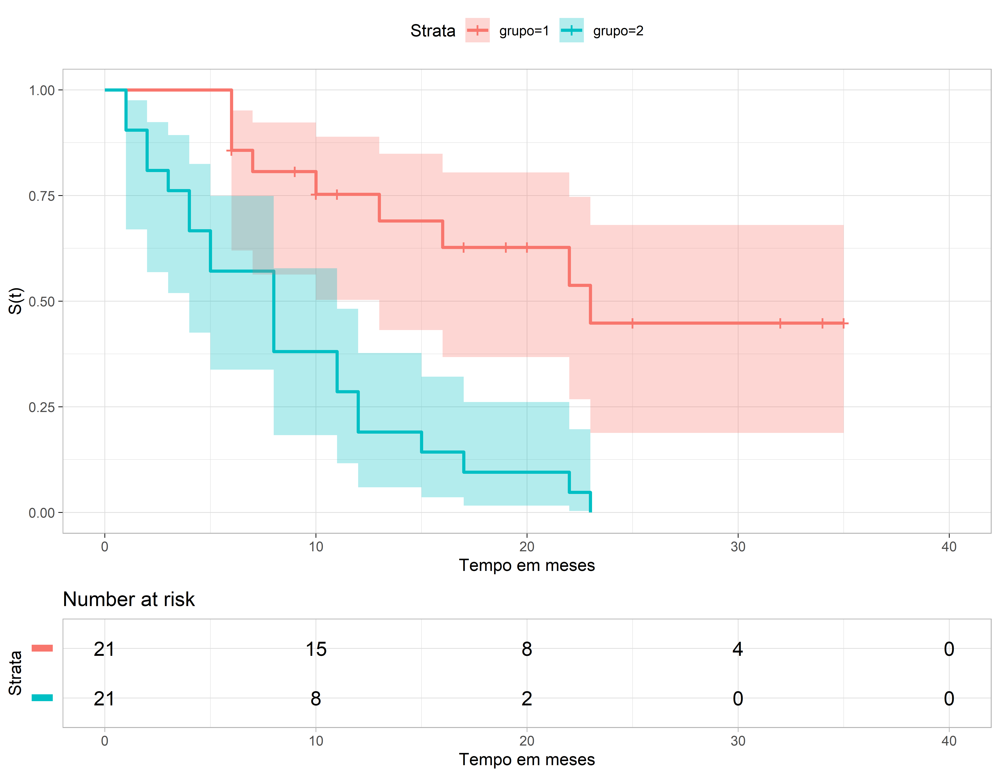

```{r}
library(survival)
tempos<- c(6,6,6,6,7,9,10,10,11,13,16,17,19,20,22,23,25,32,32,34,35)
status<- c(1,1,1,0,1,0,1,0,0,1,1,0,0,0,1,1,0,0,0,0,0)
dados <- data.frame(tempos=tempos, status=status)
ajusteKM <- survfit(Surv(tempos, status) ~ 1, data=dados)
```Análise de Sobrevivência
Modelos não Paramétricos
Análise de Sobrevivência
Nesta apresentação vamos ver passo a passo como obter uma estimativa da curva de sobrevivência através do método de Kaplan-Meier.
Vamos inicialmente utilizar o pacote survival que é a principal referência em modelos de análise de sobrevivência.
Vamos usar neste exemplo dados de pacientes com leucemia.
O objetivo é verificar se o tratamento proposto, 6MP, tem efeito sobre a doença.
Existem dois grupos de pacientes:
- 21 receberam 6MP que é um medicamento para tratar leucemia
- Os outros 21 receberam placebo.
O evento falha aqui é ocorrer uma recaída na doença.
Método de KM - 6MP
Método de KM - 6MP
```{r}
summary(ajusteKM)
```#> Call: survfit(formula = Surv(tempos, status) ~ 1, data = dados)
#>
#> time n.risk n.event survival std.err lower 95% CI upper 95% CI
#> 6 21 3 0.857 0.0764 0.720 1.000
#> 7 17 1 0.807 0.0869 0.653 0.996
#> 10 15 1 0.753 0.0963 0.586 0.968
#> 13 12 1 0.690 0.1068 0.510 0.935
#> 16 11 1 0.627 0.1141 0.439 0.896
#> 22 7 1 0.538 0.1282 0.337 0.858
#> 23 6 1 0.448 0.1346 0.249 0.807Método de KM - Placebo
```{r}
tempo2<- c(1,1,2,2,3,4,4,5,5,8,8,8,8,11,11,12,12,15,17,22,23)
status2<- c(1,1,1,1,1,1,1,1,1,1,1,1,1,1,1,1,1,1,1,1,1)
dados2 <- data.frame(tempos=tempo2, status=status2)
ajusteKM2 <- survfit(Surv(tempos, status) ~ 1, data=dados2)
```Método de KM - Placebo
```{r}
summary(ajusteKM2)
```#> Call: survfit(formula = Surv(tempos, status) ~ 1, data = dados2)
#>
#> time n.risk n.event survival std.err lower 95% CI upper 95% CI
#> 1 21 2 0.9048 0.0641 0.78754 1.000
#> 2 19 2 0.8095 0.0857 0.65785 0.996
#> 3 17 1 0.7619 0.0929 0.59988 0.968
#> 4 16 2 0.6667 0.1029 0.49268 0.902
#> 5 14 2 0.5714 0.1080 0.39455 0.828
#> 8 12 4 0.3810 0.1060 0.22085 0.657
#> 11 8 2 0.2857 0.0986 0.14529 0.562
#> 12 6 2 0.1905 0.0857 0.07887 0.460
#> 15 4 1 0.1429 0.0764 0.05011 0.407
#> 17 3 1 0.0952 0.0641 0.02549 0.356
#> 22 2 1 0.0476 0.0465 0.00703 0.322
#> 23 1 1 0.0000 NaN NA NAAnálise conjunta
Método de KM - 6MP e Placebo
summary(ajusteKM3)#> Call: survfit(formula = Surv(tempos, status) ~ grupos, data = dados3)
#>
#> grupos=1
#> time n.risk n.event survival std.err lower 95% CI upper 95% CI
#> 6 21 3 0.857 0.0764 0.720 1.000
#> 7 17 1 0.807 0.0869 0.653 0.996
#> 10 15 1 0.753 0.0963 0.586 0.968
#> 13 12 1 0.690 0.1068 0.510 0.935
#> 16 11 1 0.627 0.1141 0.439 0.896
#> 22 7 1 0.538 0.1282 0.337 0.858
#> 23 6 1 0.448 0.1346 0.249 0.807
#>
#> grupos=2
#> time n.risk n.event survival std.err lower 95% CI upper 95% CI
#> 1 21 2 0.9048 0.0641 0.78754 1.000
#> 2 19 2 0.8095 0.0857 0.65785 0.996
#> 3 17 1 0.7619 0.0929 0.59988 0.968
#> 4 16 2 0.6667 0.1029 0.49268 0.902
#> 5 14 2 0.5714 0.1080 0.39455 0.828
#> 8 12 4 0.3810 0.1060 0.22085 0.657
#> 11 8 2 0.2857 0.0986 0.14529 0.562
#> 12 6 2 0.1905 0.0857 0.07887 0.460
#> 15 4 1 0.1429 0.0764 0.05011 0.407
#> 17 3 1 0.0952 0.0641 0.02549 0.356
#> 22 2 1 0.0476 0.0465 0.00703 0.322
#> 23 1 1 0.0000 NaN NA NADiferentes Tipos de Intervalo de Confiança
IC Pleno (Aproximação pela Normal)
summary(ajusteKM4)#> Call: survfit(formula = Surv(tempos, status) ~ grupos, data = dados3,
#> conf.type = "plain")
#>
#> grupos=1
#> time n.risk n.event survival std.err lower 95% CI upper 95% CI
#> 6 21 3 0.857 0.0764 0.707 1.000
#> 7 17 1 0.807 0.0869 0.636 0.977
#> 10 15 1 0.753 0.0963 0.564 0.942
#> 13 12 1 0.690 0.1068 0.481 0.900
#> 16 11 1 0.627 0.1141 0.404 0.851
#> 22 7 1 0.538 0.1282 0.286 0.789
#> 23 6 1 0.448 0.1346 0.184 0.712
#>
#> grupos=2
#> time n.risk n.event survival std.err lower 95% CI upper 95% CI
#> 1 21 2 0.9048 0.0641 0.7792 1.000
#> 2 19 2 0.8095 0.0857 0.6416 0.977
#> 3 17 1 0.7619 0.0929 0.5797 0.944
#> 4 16 2 0.6667 0.1029 0.4650 0.868
#> 5 14 2 0.5714 0.1080 0.3598 0.783
#> 8 12 4 0.3810 0.1060 0.1733 0.589
#> 11 8 2 0.2857 0.0986 0.0925 0.479
#> 12 6 2 0.1905 0.0857 0.0225 0.358
#> 15 4 1 0.1429 0.0764 0.0000 0.293
#> 17 3 1 0.0952 0.0641 0.0000 0.221
#> 22 2 1 0.0476 0.0465 0.0000 0.139
#> 23 1 1 0.0000 NaN NaN NaNIC log - Padrão do R
ajusteKM5 <- survfit(Surv(tempos, status) ~ grupos, data=dados3,
conf.type="log")
summary(ajusteKM5)#> Call: survfit(formula = Surv(tempos, status) ~ grupos, data = dados3,
#> conf.type = "log")
#>
#> grupos=1
#> time n.risk n.event survival std.err lower 95% CI upper 95% CI
#> 6 21 3 0.857 0.0764 0.720 1.000
#> 7 17 1 0.807 0.0869 0.653 0.996
#> 10 15 1 0.753 0.0963 0.586 0.968
#> 13 12 1 0.690 0.1068 0.510 0.935
#> 16 11 1 0.627 0.1141 0.439 0.896
#> 22 7 1 0.538 0.1282 0.337 0.858
#> 23 6 1 0.448 0.1346 0.249 0.807
#>
#> grupos=2
#> time n.risk n.event survival std.err lower 95% CI upper 95% CI
#> 1 21 2 0.9048 0.0641 0.78754 1.000
#> 2 19 2 0.8095 0.0857 0.65785 0.996
#> 3 17 1 0.7619 0.0929 0.59988 0.968
#> 4 16 2 0.6667 0.1029 0.49268 0.902
#> 5 14 2 0.5714 0.1080 0.39455 0.828
#> 8 12 4 0.3810 0.1060 0.22085 0.657
#> 11 8 2 0.2857 0.0986 0.14529 0.562
#> 12 6 2 0.1905 0.0857 0.07887 0.460
#> 15 4 1 0.1429 0.0764 0.05011 0.407
#> 17 3 1 0.0952 0.0641 0.02549 0.356
#> 22 2 1 0.0476 0.0465 0.00703 0.322
#> 23 1 1 0.0000 NaN NA NAIC log-log - Kalbfleish-Prentice
ajusteKM6 <- survfit(Surv(tempos, status) ~ grupos, data=dados3,
conf.type="log-log")
summary(ajusteKM6)#> Call: survfit(formula = Surv(tempos, status) ~ grupos, data = dados3,
#> conf.type = "log-log")
#>
#> grupos=1
#> time n.risk n.event survival std.err lower 95% CI upper 95% CI
#> 6 21 3 0.857 0.0764 0.620 0.952
#> 7 17 1 0.807 0.0869 0.563 0.923
#> 10 15 1 0.753 0.0963 0.503 0.889
#> 13 12 1 0.690 0.1068 0.432 0.849
#> 16 11 1 0.627 0.1141 0.368 0.805
#> 22 7 1 0.538 0.1282 0.268 0.747
#> 23 6 1 0.448 0.1346 0.188 0.680
#>
#> grupos=2
#> time n.risk n.event survival std.err lower 95% CI upper 95% CI
#> 1 21 2 0.9048 0.0641 0.67005 0.975
#> 2 19 2 0.8095 0.0857 0.56891 0.924
#> 3 17 1 0.7619 0.0929 0.51939 0.893
#> 4 16 2 0.6667 0.1029 0.42535 0.825
#> 5 14 2 0.5714 0.1080 0.33798 0.749
#> 8 12 4 0.3810 0.1060 0.18307 0.578
#> 11 8 2 0.2857 0.0986 0.11656 0.482
#> 12 6 2 0.1905 0.0857 0.05948 0.377
#> 15 4 1 0.1429 0.0764 0.03566 0.321
#> 17 3 1 0.0952 0.0641 0.01626 0.261
#> 22 2 1 0.0476 0.0465 0.00332 0.197
#> 23 1 1 0.0000 NaN NA NAOutra forma de visualização
library(survminer)
dados <- data.frame(tempo=tempo2g, status=status2g, grupo= grupos)
ajusteKM4 <- survfit(Surv(tempo2g, status2g) ~ grupo, data= dados, conf.type="log-log")
graf <- ggsurvplot(ajusteKM4, data = dados,
risk.table = TRUE,
pval = FALSE,
conf.int = TRUE,
xlim = c(0,40),
xlab = "Tempo em meses",
ylab = "S(t)",
break.time.by = 10,
ggtheme = theme_light(),
risk.table.y.text.col = T, risk.table.y.text = FALSE
)graf
Outra forma de sumário
surv_summary(ajusteKM4)#> Warning in .get_data(x, data = data): The `data` argument is not provided. Data
#> will be extracted from model fit.#> time n.risk n.event n.censor surv std.err upper lower
#> 1 6 21 3 1 0.85714286 0.08908708 0.9515517 0.619717955
#> 2 7 17 1 0 0.80672269 0.10776353 0.9228090 0.563146565
#> 3 9 16 0 1 0.80672269 0.10776353 0.9228090 0.563146565
#> 4 10 15 1 1 0.75294118 0.12796438 0.8893618 0.503199511
#> 5 11 13 0 1 0.75294118 0.12796438 0.8893618 0.503199511
#> 6 13 12 1 0 0.69019608 0.15475995 0.8490660 0.431610222
#> 7 16 11 1 0 0.62745098 0.18177335 0.8049122 0.367510856
#> 8 17 10 0 1 0.62745098 0.18177335 0.8049122 0.367510856
#> 9 19 9 0 1 0.62745098 0.18177335 0.8049122 0.367510856
#> 10 20 8 0 1 0.62745098 0.18177335 0.8049122 0.367510856
#> 11 22 7 1 0 0.53781513 0.23843463 0.7467907 0.267778937
#> 12 23 6 1 0 0.44817927 0.30030719 0.6801426 0.188052006
#> 13 25 5 0 1 0.44817927 0.30030719 0.6801426 0.188052006
#> 14 32 4 0 2 0.44817927 0.30030719 0.6801426 0.188052006
#> 15 34 2 0 1 0.44817927 0.30030719 0.6801426 0.188052006
#> 16 35 1 0 1 0.44817927 0.30030719 0.6801426 0.188052006
#> 17 1 21 2 0 0.90476190 0.07079923 0.9752941 0.670045882
#> 18 2 19 2 0 0.80952381 0.10585122 0.9238888 0.568905060
#> 19 3 17 1 0 0.76190476 0.12198751 0.8932571 0.519391415
#> 20 4 16 2 0 0.66666667 0.15430335 0.8250440 0.425350436
#> 21 5 14 2 0 0.57142857 0.18898224 0.7492407 0.337976954
#> 22 8 12 4 0 0.38095238 0.27817432 0.5777887 0.183066549
#> 23 11 8 2 0 0.28571429 0.34503278 0.4818196 0.116561326
#> 24 12 6 2 0 0.19047619 0.44986771 0.3774349 0.059481701
#> 25 15 4 1 0 0.14285714 0.53452248 0.3211616 0.035657355
#> 26 17 3 1 0 0.09523810 0.67259271 0.2612500 0.016259260
#> 27 22 2 1 0 0.04761905 0.97590007 0.1970449 0.003324463
#> 28 23 1 1 0 0.00000000 Inf NA NA
#> strata grupo
#> 1 grupo=1 1
#> 2 grupo=1 1
#> 3 grupo=1 1
#> 4 grupo=1 1
#> 5 grupo=1 1
#> 6 grupo=1 1
#> 7 grupo=1 1
#> 8 grupo=1 1
#> 9 grupo=1 1
#> 10 grupo=1 1
#> 11 grupo=1 1
#> 12 grupo=1 1
#> 13 grupo=1 1
#> 14 grupo=1 1
#> 15 grupo=1 1
#> 16 grupo=1 1
#> 17 grupo=2 2
#> 18 grupo=2 2
#> 19 grupo=2 2
#> 20 grupo=2 2
#> 21 grupo=2 2
#> 22 grupo=2 2
#> 23 grupo=2 2
#> 24 grupo=2 2
#> 25 grupo=2 2
#> 26 grupo=2 2
#> 27 grupo=2 2
#> 28 grupo=2 2